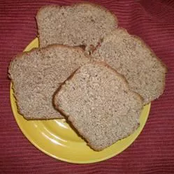

Honey and Flaxseed Bread

Ingredients:
- 1 ⅛ cups water
- 1 ½ tablespoons flaxseed oil
- 3 tablespoons honey
- ½ tablespoon liquid lecithin
- 3 cups whole wheat flour
- ½ cup flax seed
- 2 tablespoons bread flour
- 3 tablespoons whey powder
- 1 ½ teaspoons sea salt
- 2 teaspoons active dry yeast
Directions:
Step #1
Put all the ingredients in the pan of the bread machine in the order suggested by the manufacturer.
Step #2
Select Wheat Cycle, and Start.
Shout out to Allrecipes for the recipe! Recipe Here!